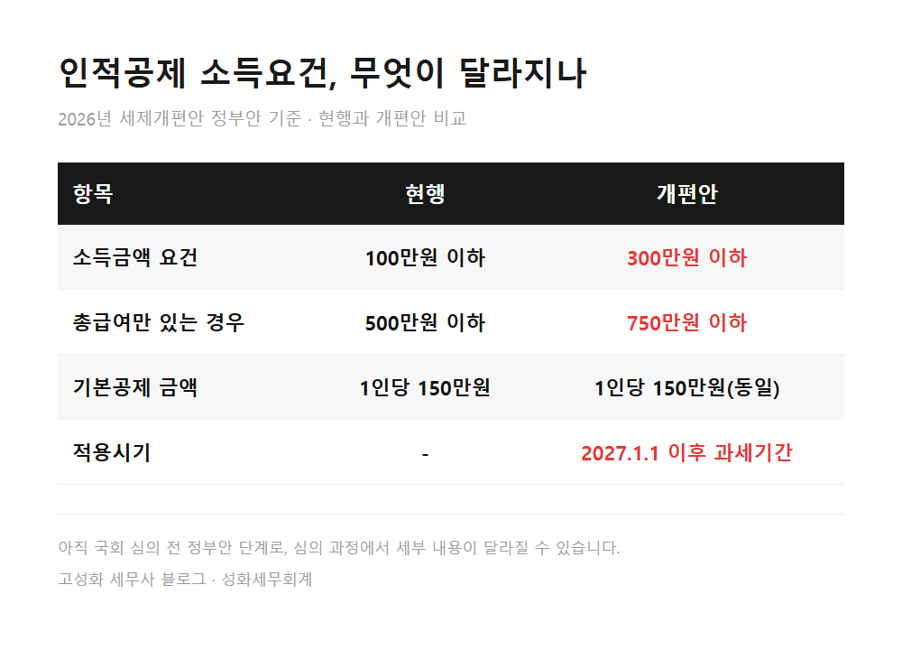
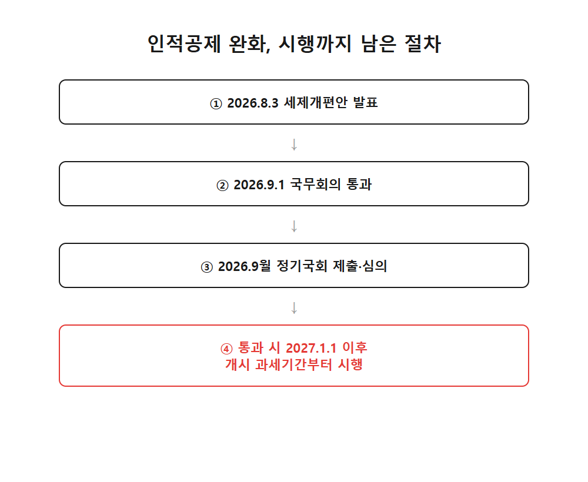
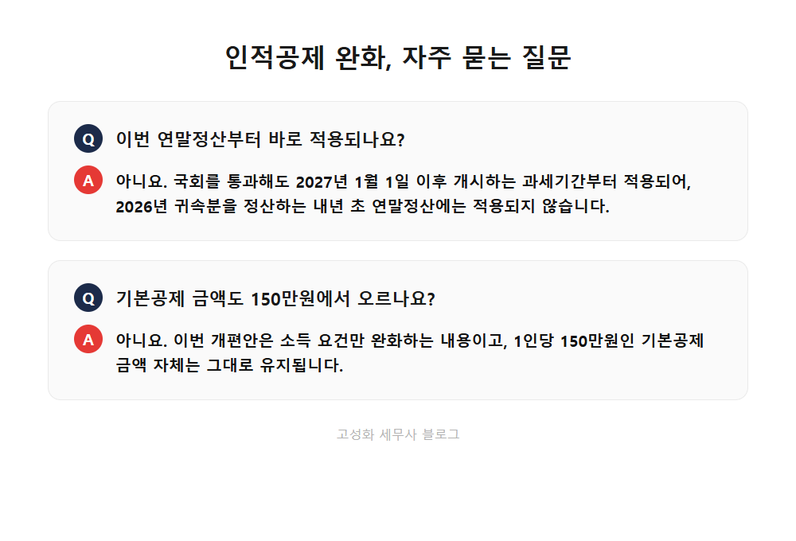

인적공제 소득요건 완화, 300만원까지 확대

연말정산 시즌마다 상담실에서 가장 많이 받는 질문 중 하나가 "이 사람, 부양가족으로 올릴 수 있나요"입니다. 배우자가 파트타임을 뛰고 있거나 부모님이 소일거리로 용돈벌이를 하시면 애매해지는 부분이죠. 성화세무회계는 이런 경계선에 있는 상황을 하나하나 따져서 놓치는 공제가 없도록 챙기는 걸 원칙으로 삼고 있습니다.
그런데 이 기준 자체가 조만간 크게 바뀔 가능성이 생겼습니다. 정부가 지난 8월 발표한 2026년 세제개편안에 인적공제 소득요건을 완화하는 내용이 담겼기 때문입니다.
이 글을 보고 계신 분이라면 아마 이런 상황 중 하나일 겁니다. ① 배우자나 부모님 소득이 100만원을 살짝 넘어서 인적공제를 포기했던 분 ② 아르바이트하는 자녀나 프리랜서로 일하는 가족이 있어 매년 계산이 헷갈리는 분 ③ 세법이 바뀐다는 소식은 들었지만 정확히 뭐가, 언제부터 달라지는지 궁금한 분.
바뀌는 방향은 명확합니다. 소득금액 기준이 100만원에서 300만원으로, 근로소득만 있는 경우 총급여 기준은 500만원에서 750만원으로 올라갑니다. 다만 아직 국회를 통과한 게 아니고, 시행 시점도 생각보다 뒤라는 점은 꼭 함께 알아두셔야 합니다.
- 인적공제, 지금 기준부터 짚어보겠습니다
- 무엇이, 언제부터 달라지나요
- 실무에서 자주 헷갈리는 부분들
한눈에 보기



자주 묻는 질문
이번 연말정산부터 바로 적용되나요?
아직 법이 확정된 게 아닌데 지금부터 신경 써야 하나요?
기본공제 금액도 150만원에서 오르나요?
정리하면
인적공제 소득요건이 100만원에서 300만원으로, 총급여 기준은 500만원에서 750만원으로 완화되는 내용이 이번 세제개편안에 담겼습니다. 다만 아직 국회 심의가 남아 있고, 실제 적용은 2027년 귀속 소득분부터라는 점은 꼭 기억해두셔야 합니다.
그동안 가족 소득이 애매해서 공제를 놓치셨던 분이라면, 이번 기회에 우리 가족 소득 구조를 한번 정리해보시는 것도 좋겠습니다. 성화세무회계에서는 개별 상황에 맞춰 인적공제뿐 아니라 종합소득세 전반을 함께 점검해드리고 있으니, 궁금하신 점이 있으면 편하게 상담 문의해주세요.
본문 전체와 근거 조문은 블로그에서 확인하실 수 있습니다.